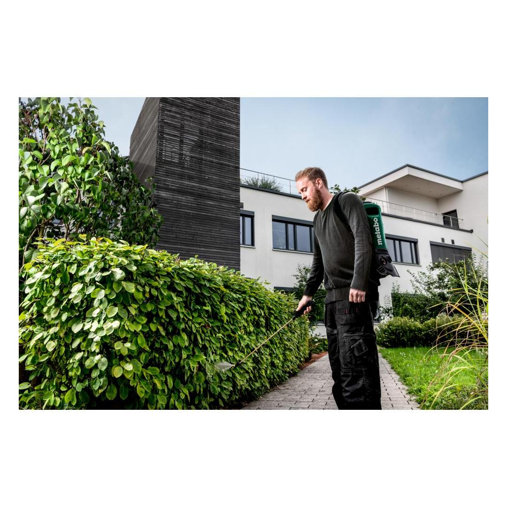
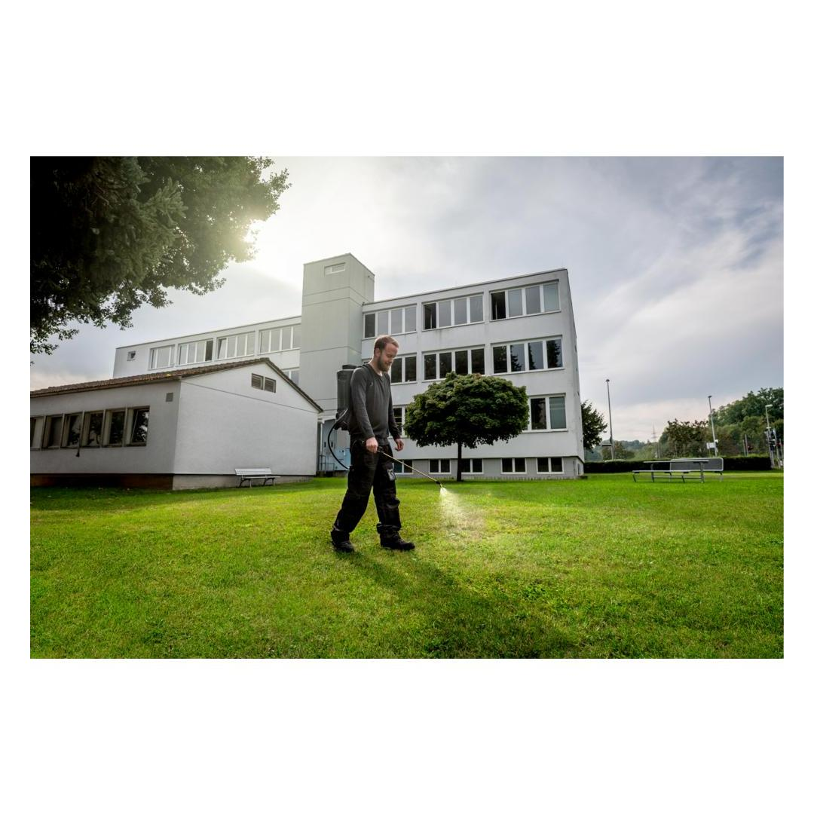
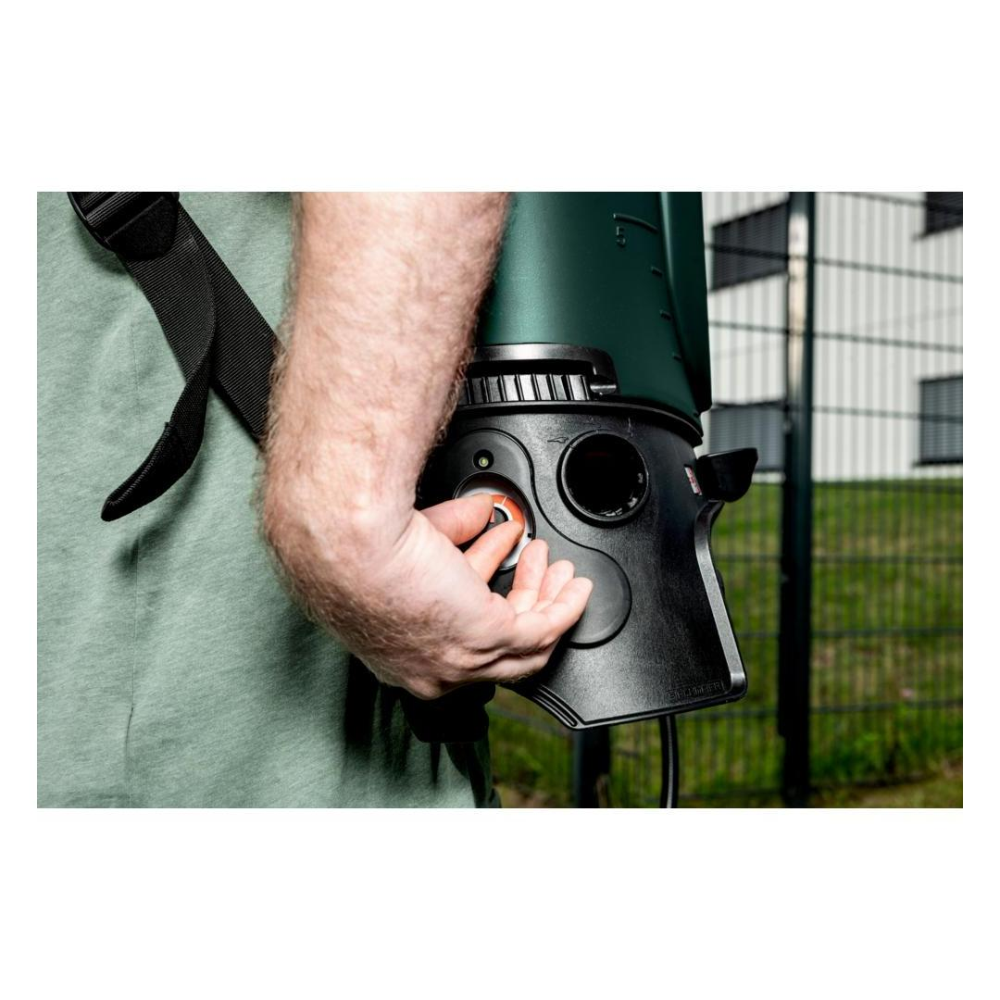
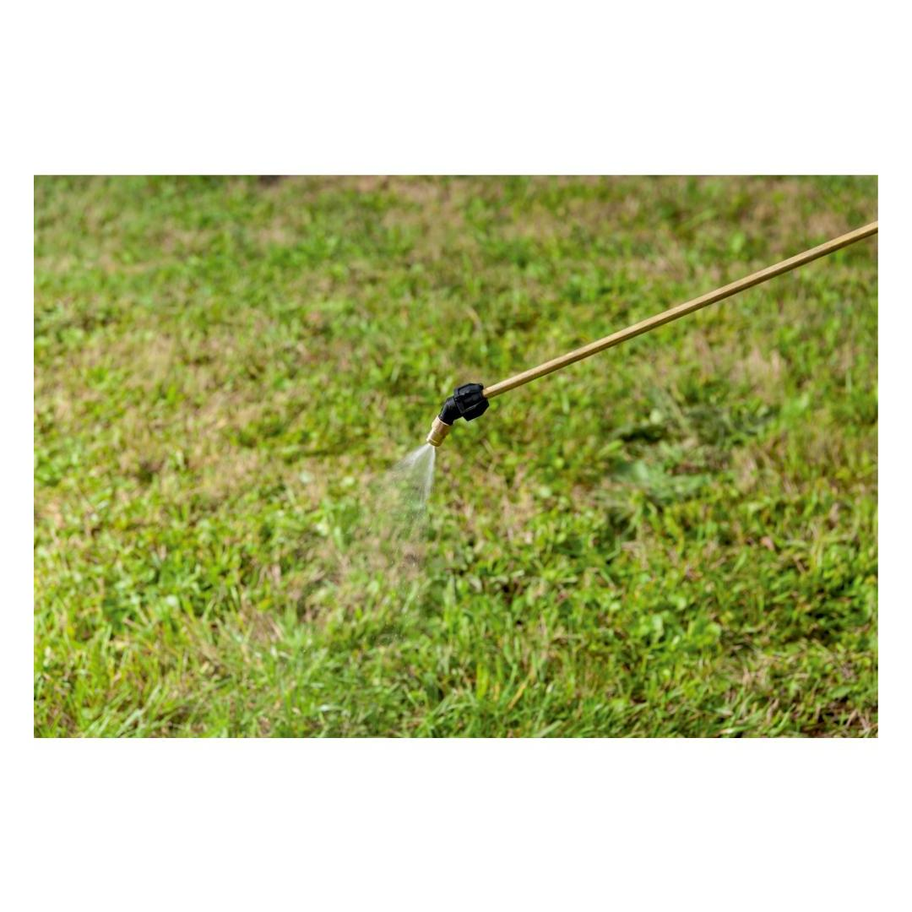
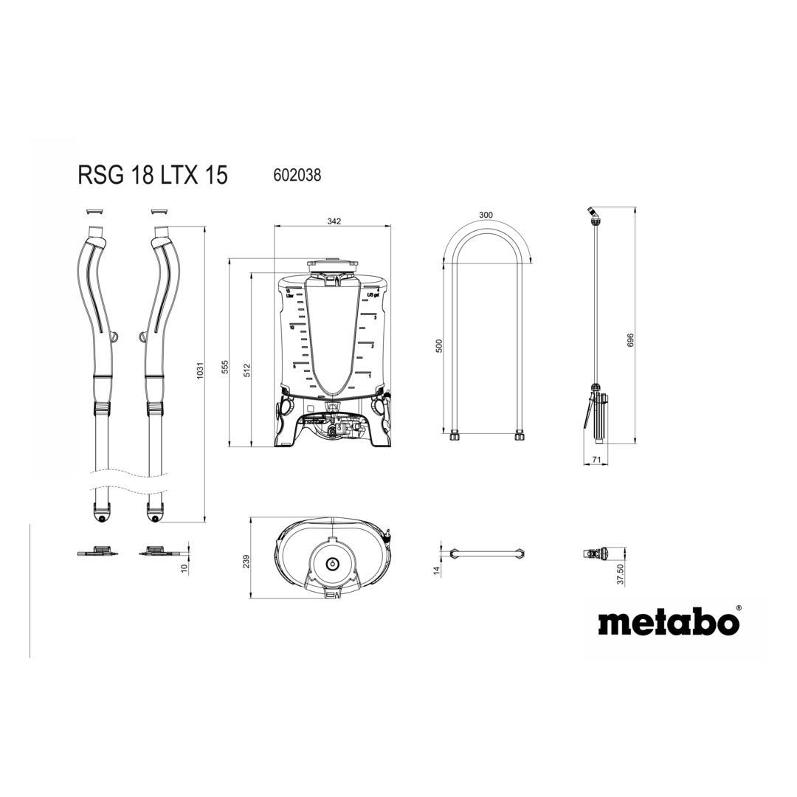

Metabo | MACHINE ONLY! Cordless backpack sprayer
602038850









| Battery voltage | 18 V |
| Max. fill volume | 15 l / 4 gal |
| Operating pressure | 1 - 3 bar |
| Spray volume at 1.5 bar/2.0 Ah | 90 l / 24 gal |
Product Description
- Battery-powered backpack sprayer for uniform spraying of plants without manual pumping
- Suitable for pesticides (herbicides, insecticides, fungicides etc.), liquid fertilisers, plant fortifiers, water
- Precise dosing of the spraying volume to match the application thanks to steplessly adjustable operating pressure
- Constant spraying pattern thanks to electronically controlled pump
- Regulating nozzle for easy, fast change between spray mist and jet
- High degree of wearing comfort thanks to ergonomic tank shape and padded shoulder straps with click closure
- Large tank opening for easy emptying and cleaning
- Integrated filter system for protection against contamination
- Long service life thanks to safety shutdown in the event of thermal overload
- Easy transport thanks to recessed grips and holder for the spray pipe
Product Highlights
Precise dosing of the spraying volume to match the application thanks to steplessly adjustable operating pressurePrecise dosing of the spraying volume to match the application thanks to steplessly adjustable operating pressure
Precise dosing of the spraying volume to match the application thanks to steplessly adjustable operating pressure
Regulating nozzle for easy, fast change between spray mist and jetRegulating nozzle for easy, fast change between spray mist and jet
Regulating nozzle for easy, fast change between spray mist and jet
CAS, the multi-brand battery systemCAS, the multi-brand battery system
100% compatibility of machine, battery packs and chargers of one volt class – from Metabo and other brands. Discover now at www.cordless-alliance-system.com
Technical Details
KEY FIGURES| Battery voltage | 18 V |
| Max. fill volume | 15 l / 4 gal |
| Operating pressure | 1 - 3 bar |
| Throughput | 0.3 - 1.9 l/min |
| Spray volume at 1.5 bar/2.0 Ah | 90 l / 24 gal |
| Runtime at 1.5 bar/2.0 Ah | 4 h |
| Weight without battery pack | 4 kg / 8.8 lbs |
| Weight with battery pack | 4.4 kg / 9.7 lbs |
NOISE EMISSION| Sound pressure level | 70 dB(A) |
Scope of delivery
| Manual valve |
| Hose line |
| Spray pipe |
| Regulating nozzle (1.7 mm) |
| without battery pack, without charger |